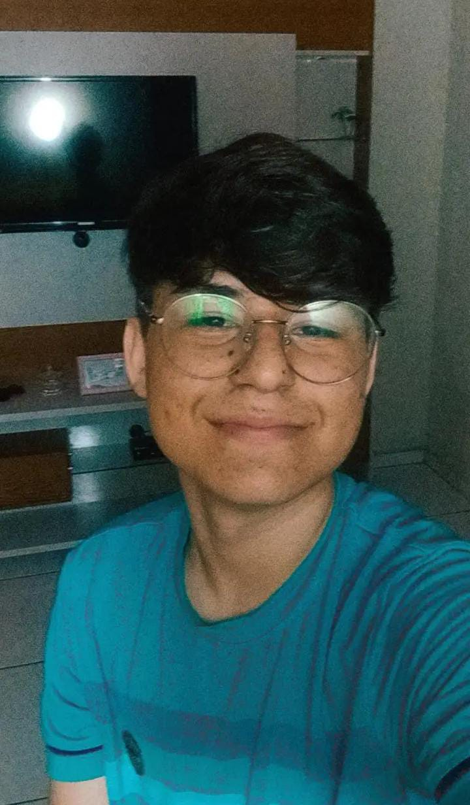

SOBRE NÓS
Sorvetinho do Amor:
Somos uma empresa que deseja entregar o melhor ao nosso cliente, levando um produto cheio de amor e carinho, feito com responsabilidade. Temos como objetivo cativar os nossos clientes não apenas com os nossos saborosos produtos, mas queremos que façam parte da nossa familia! Fundada em 2023 por alunos do 2° ano Desenvolvimento de sistemas (DS) familia JG.
COMO SURGIU A IDEIA?
Como uma equipe, estamos o tempo todo buscando o bem estar de nossos clientes, melhorando nossos produtos a cada dia. Começamos após uma conversa sobre o bem estar de nossos clientes, após o horário de almoço. Fazemos mousse, pirulitos de chocolates e nosso mais amado, sorvetinho, com amor e responsabilidade, para que nossos produtos sejam totalmente aprovados por nossa clientela. Estamos localizados na EEEP João Jackson Lobo Guerra, trabalhamos no horário de almoço, onde os alunos estão em momento de intervalo, assim, fazendo com que nossos clientes possam ter uma sobremesa deliciosa após o almoço mesmo estando no horário escolar. Nossos produtos são feitos de forma caseira, utilizando ingredientes de alta qualidade, somos especializados em sorvete, trazendo assim um produto de alta qualidade.
A ideia da nossa empresa surgiu quando vimos a necessidade de adoçar a vida dos alunos da nossa escola, depois de uma grande e complicada conversa com os integrantes da nossa equipe, surgiu uma brilhante ideia do sorvetinho do amor, inclusive o nome surgiu através de uma componente do nosso grupo Yoranna alves, virou uma brincadeira da equipe e acabou se tornando o nome da nossa empresa.
EMPREENDEDORES E FUNCIONARIOS:
Eu sou Helânia Barbosa, tenho 16 anos, sou estudante do curso de Desenvolvimento de Sistema da escola profissional. me considero uma pessoa amigavel, "chata" ou seja resposavel, gosto muito de estudar, ler e pesquisar sobre assuntos que me intereçam, gosto de praticar jogos como volei e de açaí! uso com muita frequencia o You Tube e no momento estou lendo o livro "dicipulado da mente", incluseve tenho como religião o cristianismo."Se eu encontrar em mim mesmo um desejo que nenhuma experiência neste mundo pode satisfazer, a explicação mais provavel é que eu fui feito para outro mundo" lewris.
Eu me chamo Yoranna Alves, tenho 17 anos e moro em Lagoa do Mato. Eu acho que não tenho um hobbie especifico... Eu gosto de ir á academia e tambem á igreja, minha rede social favorita é o instagram, e se eu pudesse eu passaria o dia inteiro assistindo filmes na netflix. Eu sou extrovertida e amo amar cada momento da minha vida como se fosse o ultimo!
Meu nome é Giovana Pereira, tenho 16 anos, e estudo na escola João Jackson Lobo Guerra no 2° ano do ensino médio, sou uma pessoa alegre, carinhosa, simpática e educada, meus hobbies são cantar, tocar sax sofone, e estudar, gosto de animais, e busco sempre aproveitar cada momento com pessoas que amo. Busco sempre evoluir a cada dia!
Eu me chamo italo Silva, sou um investidor/funcionário da empresa sorvetinho do amor, tenho 16 anos, gosto muito de vôlei e de ler livros, assistir filmes e series, (inclusive meu filme favorito e hp). o porque eu entrei nesse ramo do sorvete... por livre e espontanea pressão... enfim, eu me acho bem introvertido, mas quando faço amizade ninguem me segura!

Eu me chamo Hellys Fernandes Barbosa sou progamador/ funcionario/ investidor da empresa tenho 18 anos. meus hobbies sau jogar volei, ler livros, escutar musica, olhar as estrelas e progamar nas horas vagas, no mais sou apenas mais um buscando por si-mesmo na longa caminhada da vida.
Meu nome é Cauã Teles, tenho 16 anos, meus hobbies são jogar, praticar basquete, e escutar música!